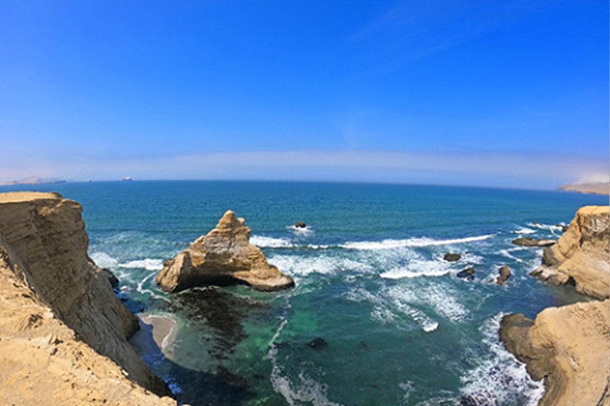
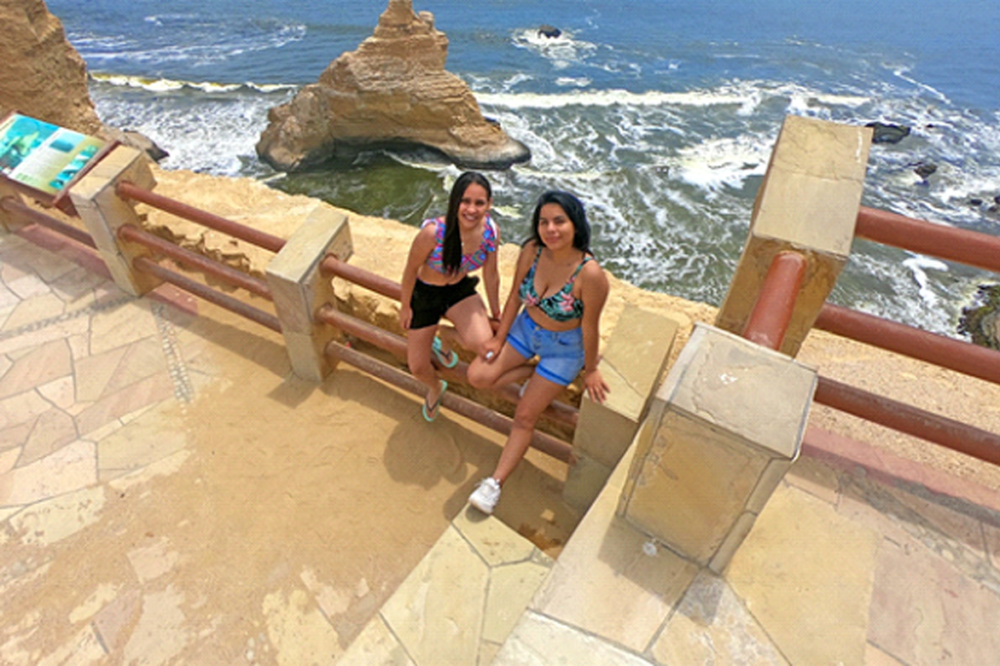
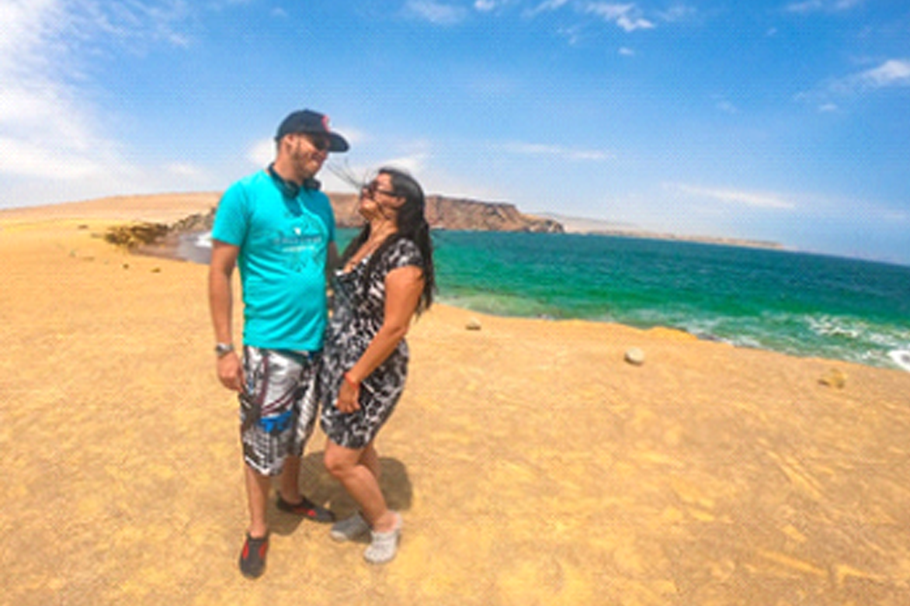
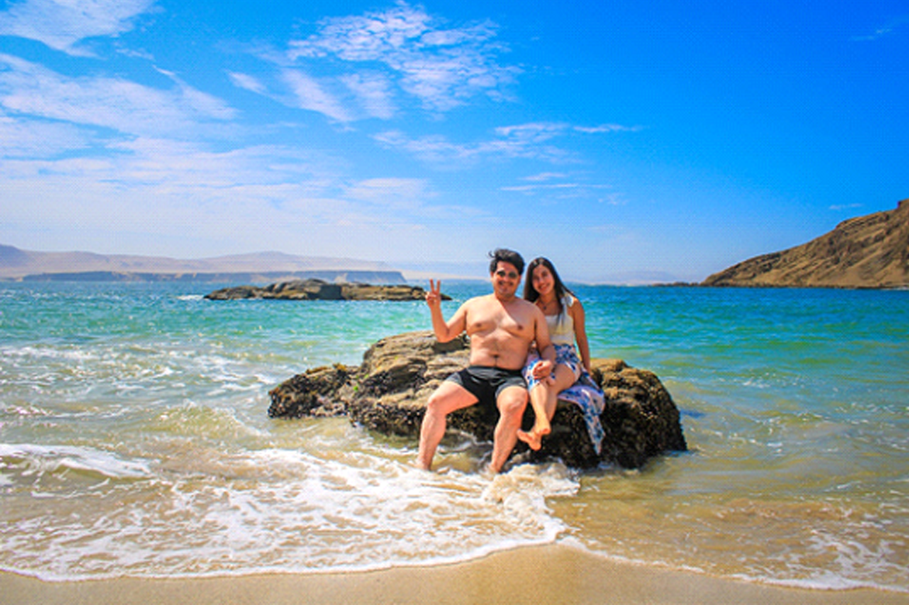
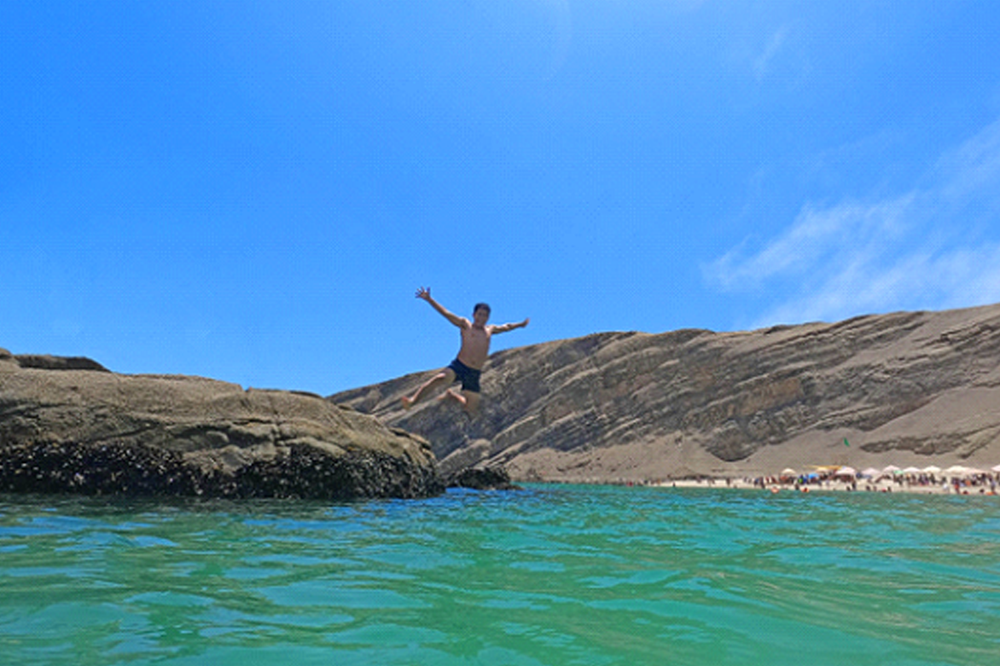
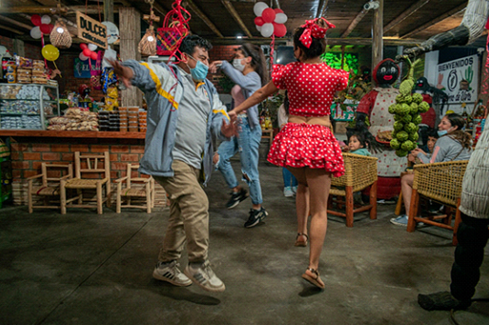
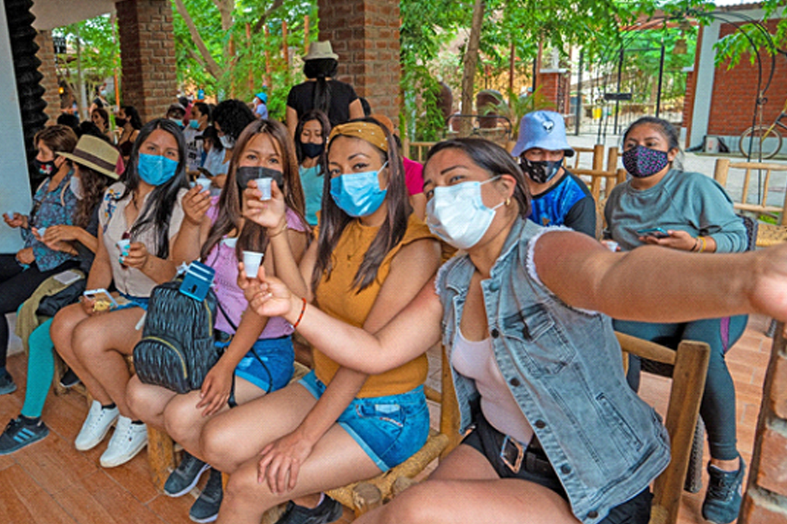

- ✅Tour Básico: S/ 99
- ✅Tour Básico para 2 personas a mas: S/ 95
- ✅Tour Básico reservado 7 dias anticipacion: S/ 89
- ✅Niños menores de 5 años no pagan, viajan totalmente gratis.
ITINERARIO
PUNTOS DE EMBARQUES
- 5:40 AM C.Comercial Plaza Norte, altura de Av. Thomas Valle con Panamericana Norte, única puerta que da para la Av Panamericana norte.
- 5:30 AM Centro Comercial La Rambla San Borja (Calle Ucello 162 – costado de Ripley) 10 minutos tolerancia.
- 5:15 AM Puentes: Primavera / Benavides / Atocongo / Alipio.
1ra Parada
BAHÍA DE PARACAS: Arribo en el boulevard de Asia o Paracas donde haremos una breve parada para comprar algunos insumos para playa La Mina. Ya que por la zona no hay tiendas.
2ra Parada
RESERVA DE PARACAS: Nos adentramos en la Reserva Terrestre de Paracas, hasta llegar a los miradores de Playa La catedral, formacion rocosa por la erosion del agua y viento, asimismo se puede apreciar el mirador de playa la catedral.

3ra Parada
Siguiendo con nuestra excursión haremos nuestra visita a la playa la Roja, caracterizada por su arena roja y sus aguas turquesas, vista a la playa raspón y lagunillas. Disfrutaremos de lugares desérticos con hermosas vistas al mar, lindas dunas, y formaciones rocosas en el mar.

4ra Parada
PLAYA LA MINA: Llegaremos a una de las playas más bonitas del sur de Lima “La Mina”, aquí podremos disfrutar de tiempo libre para distintas actividades y fotografías un aprox de 3 horas. Luego de haber disfrutado una divertida mañana, nos dirigiremos a Paracas para el respectivo almuerzo

5ra Parada
CHINCHA: Finalmente haremos una parada en la vitivinícola “Racimo de Uva” para degustar gratis vinos y piscos, chocolatería, tejas, alfajores, y disfrutaremos de un show de música negra. Volveremos a la movilidad para nuestro retorno a Lima.

NUESTRO PROGRAMA INCLUYE:
- ✅Transporte Bioseguro ida y vuelta.
- ✅Guía oficial de turismo.
- ✅Agencia de Viajes debidamente acreditada por el Mincetur.
- ✅Gratis 1 vino al cumpleañero del mes.
- ✅Gratis 1 vino a grupos de 4 a más.
- ✅Visita a la Bahia de Paracas
- ✅Visita Mirador de Playa Catedral
- ✅ Visita Mirador de Playa Roja
- ✅Visita a la playa La Mina.
- ✅ 3 - 4 horas de playa para nadar.
- ✅Vista a la playa Lagunillas.
- ✅Vista a la playa Raspón.
- ✅Observación de aves marinas.
- ✅Vitivinícola Racimos de Uva en Chincha
- ✅Chaleco salvavidas para el grupo.
- ✅Degustación de vinos, piscos, macerados y cremas de piscos
- ✅Degustación de dulces chinchanos
- ✅Show de baile afroperuano.
- ✅Fotografías GO PRO.
- ✅Botiquín de primeros auxilios.
- ✅Seguros en regla, SOAT turístico.
NO INCLUYE:
- Almuerzo / Impuestos Turisticos de adultos S/. 11.00 y niños S/5.00
RETORNO:
Estaremos en lima entre 9:00 pm aprox.
***Fin de nuestros servicios***
Las actividades pueden variar su orden
¿COMO RESERVAR?
- 1 Solicitar Cuentas Bancarias
- 2 Puedes reservar con el 50% y lo restante se paga al subir al bus el día del Tour.
- 3 Enviarnos el comprobante y confirmar sus reservas con Nombres, N° DNI, C.E y número telefónico .
- 4 Solicita tu boleto de abordo digital
Estamos registrados en Ministerio de Comercio y Turismo del Perú MINCETUR único requisito para agencias de viajes formales y BIOSEGURAS.
REVISA NUESTROS TERMINOS Y CONDICIONES ⬇
LINK: "https://bit.ly/36cYjLF "
 Hola, ¿en que podemos ayudarle?
Hola, ¿en que podemos ayudarle?